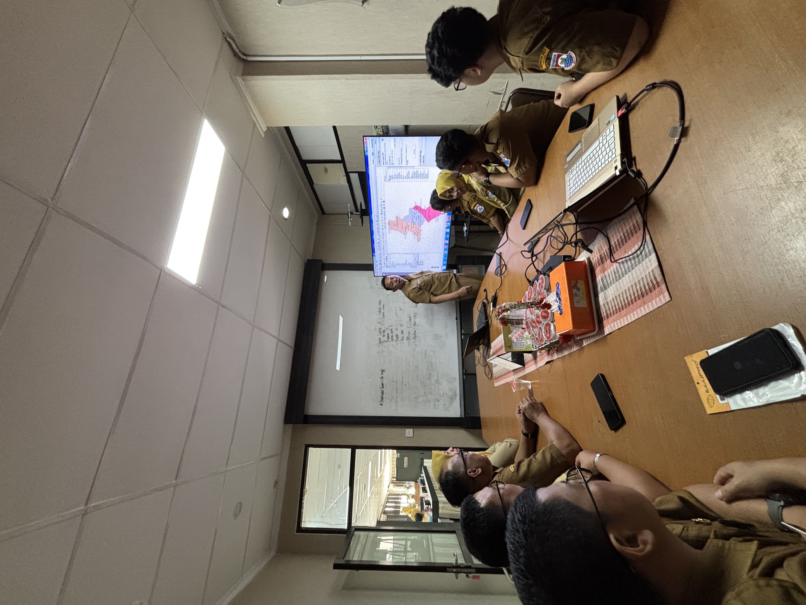
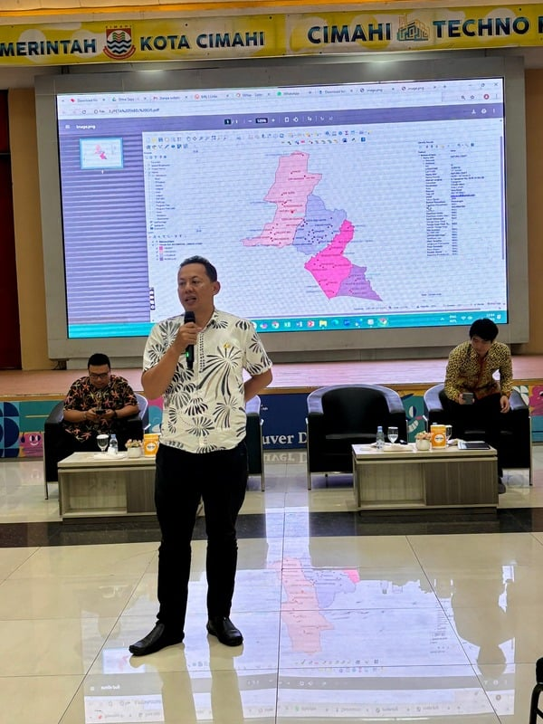
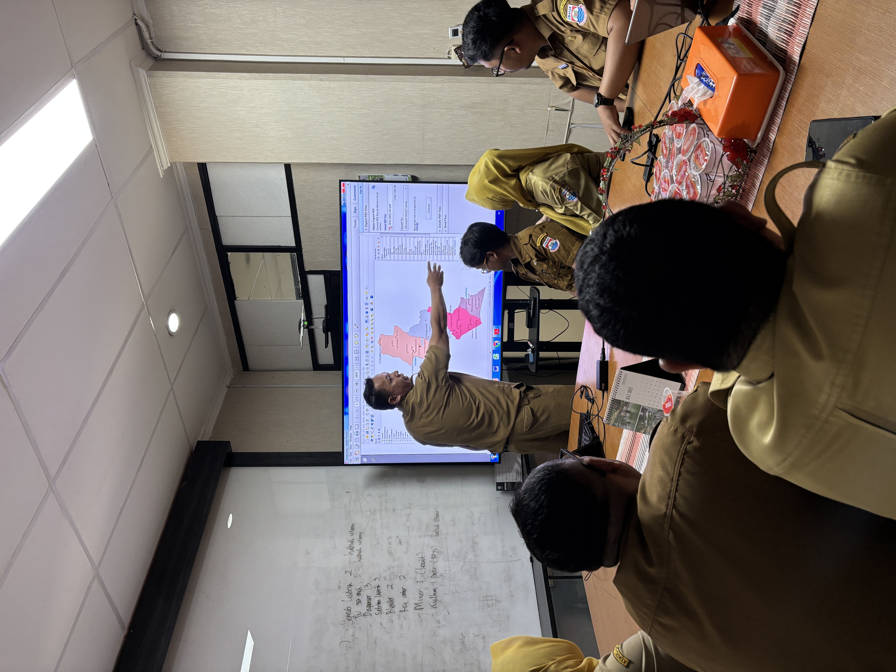
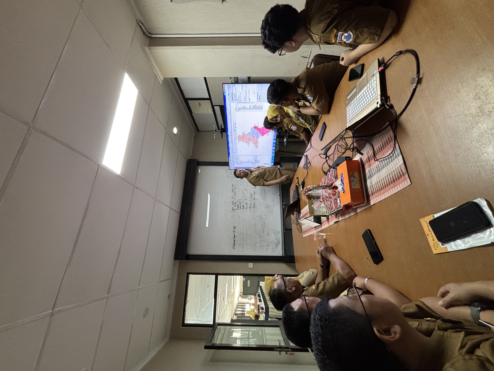
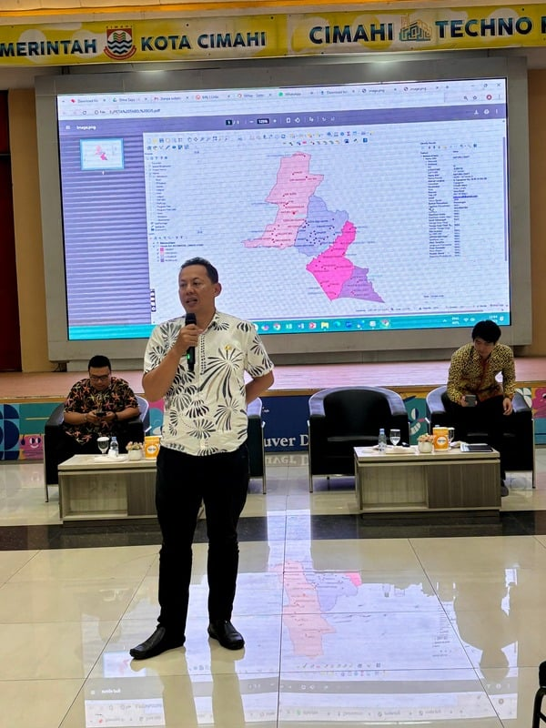
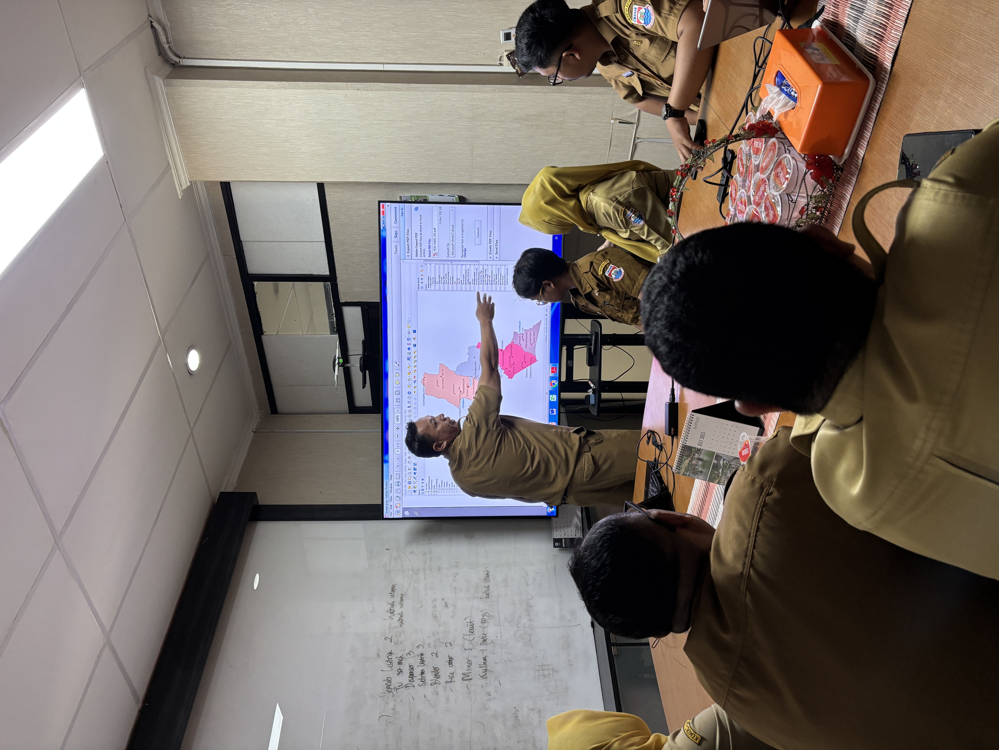
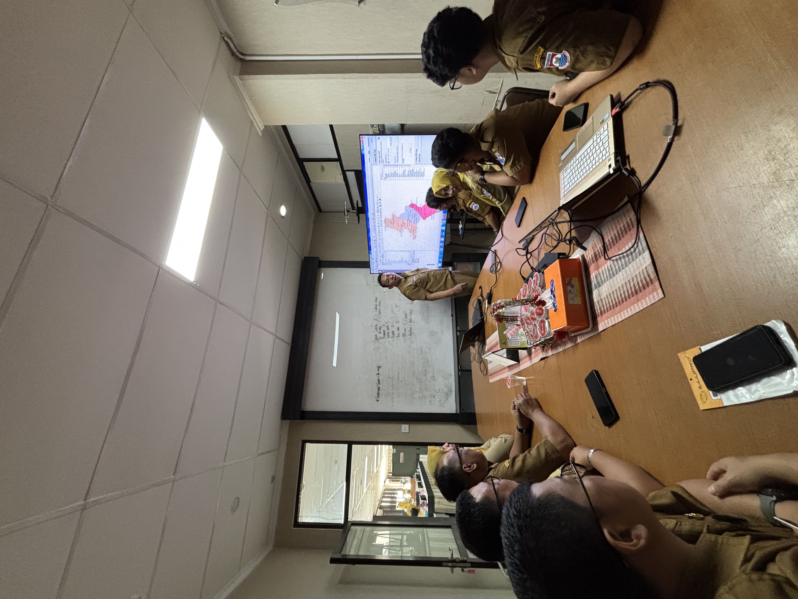
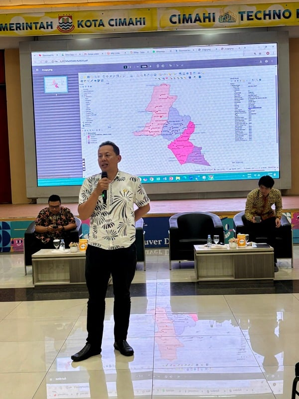
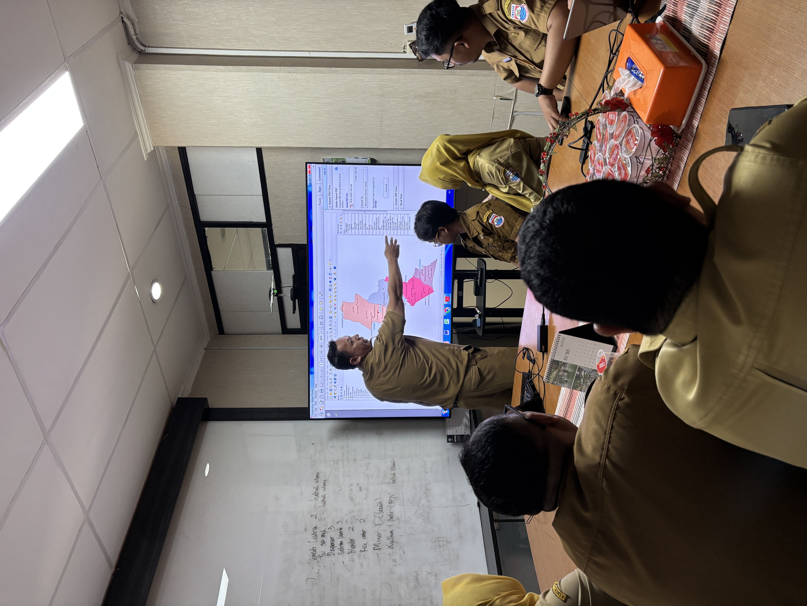

Sistem Informasi Identitas IKM Berbasis GIS
Pemetaan Industri Kecil dan Menengah di Kecamatan Cimahi Utara untuk Mendukung Pertumbuhan Ekonomi Lokal
 






Pemetaan Industri Kecil dan Menengah di Kecamatan Cimahi Utara untuk Mendukung Pertumbuhan Ekonomi Lokal



Dinas Perdagangan Koperasi dan Perindustrian Kota Cimahi
Disdagkoperin Kota Cimahi adalah dinas yang bertanggung jawab atas pengembangan perdagangan, koperasi, dan perindustrian di wilayah Kota Cimahi. Dinas ini berperan penting dalam mendukung pertumbuhan ekonomi lokal melalui pembinaan dan pengembangan usaha kecil dan menengah, serta meningkatkan daya saing produk lokal di pasar nasional dan internasional.
Dalam menjalankan tugasnya, Disdagkoperin Kota Cimahi berkomitmen untuk memberikan pelayanan terbaik kepada pelaku usaha, memfasilitasi pengembangan kapasitas usaha, dan menciptakan iklim usaha yang kondusif bagi pertumbuhan ekonomi daerah.
Hella Haerani, S.E., M.M.
Kepala Dinas Perdagangan Koperasi dan Perindustrian Kota Cimahi
Dinas Perdagangan Koperasi dan Perindustrian Kota Cimahi 2025
Industri Kecil dan menengah (IKM) memiliki peran strategis dalam mendukung pertumbuhan ekonomi daerah. Namun salah satu tantangan utama yang dihadapi adalah kurangnya data spasial yang akurat dan terintegrasi terkait lokasi, jenis usaha serta potensi masing–masing IKM, sehingga menyulitkan dalam menentukan arah kebijakan, program dan kegiatan pembinaan IKM yang tepat sasaran/sesuai kebutuhan serta berkelanjutan.
Oleh karena itu dilaksanakan sebuah aksi perubahan berupa pengembangan Sistem Informasi Identitas IKM berbasis GIS (Geografis Informasi System) di Kecamatan Cimahi Utara.
Visualisasi geografis industri kecil dan menengah di Kecamatan Cimahi Utara
Di bawah ini adalah screenshot berformat PNG untuk Peta Geographical Information System (GIS) di Kecamatan Cimahi Utara
Untuk menjalankan file .qgz dibutuhkan aplikasi GIS telah terinstal dengan baik di komputer anda
Dokumentasi kegiatan Sistem Informasi Identitas IKM Berbasis GIS Kecamatan Cimahi Utara

Foto dan Video Kegiatan selengkapnya dapat di download pada halaman Download
Link download file-file kegiatan Sistem Informasi Identitas IKM Berbasis GIS Kecamatan Cimahi Utara
Dokumen lengkap dalam format PDF yang berisi seluruh hasil penelitian dan analisis sistem informasi berbasis GIS
Download PDFFile project GIS untuk analisis lebih lanjut dengan aplikasi GIS seperti QGIS atau ArcGIS
Download GIS ProjectJika membutuhkan informasi lebih lanjut dapat menghubungi kontak WhatsApp dibawah ini